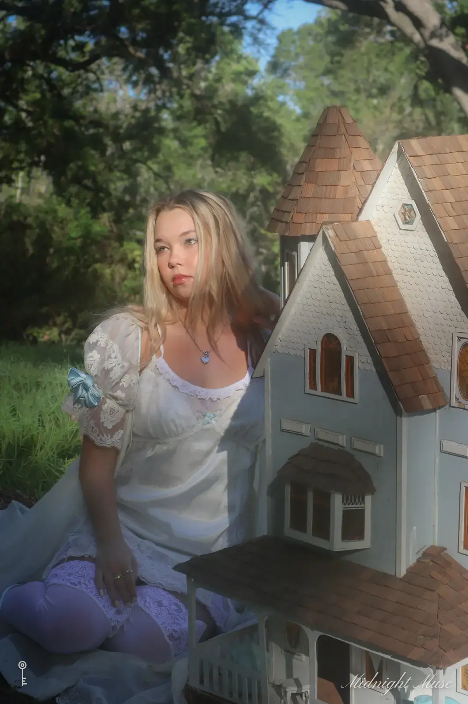
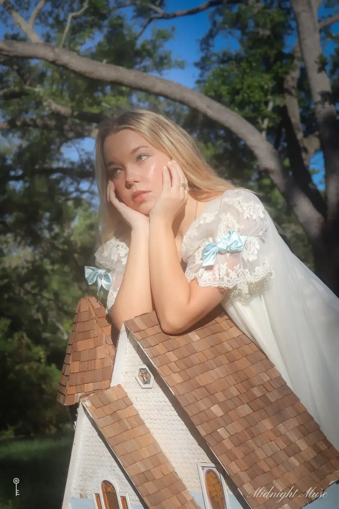
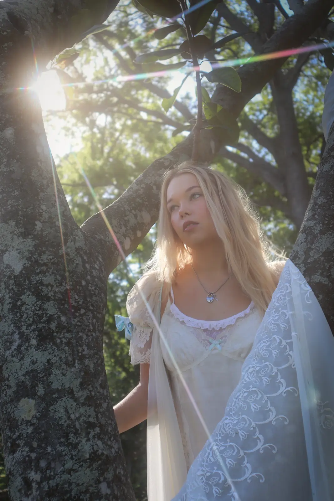

I A doll house by Dani
The Dollhouse
A white dollhouse in a garden, lace and soft light



Every set is built for the person in it. Tell Dani what yours looks like.
Describe your setI A doll house by Dani
A white dollhouse in a garden, lace and soft light



Every set is built for the person in it. Tell Dani what yours looks like.
Describe your set